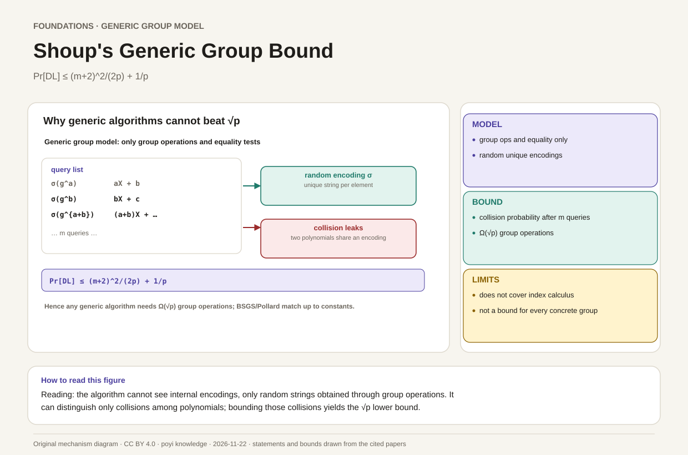
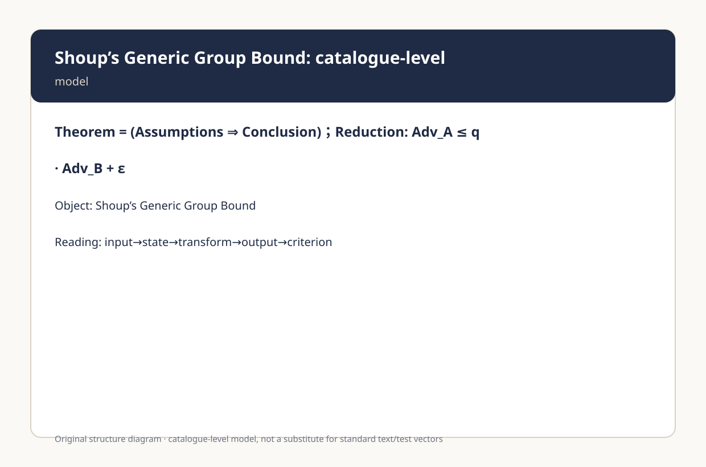

Principles
Theorem: Shoup's Generic Group Bound (Shoup 通用界). ### The generic group model
In the generic group model (GGM), group elements are not readable integers or rational points; they are random encodings σ(g). An algorithm may do only three things: apply group operations to known elements, test whether two encodings are equal, and receive challenge encodings. It cannot exploit special properties of a concrete group, such as the algebraic structure of finite-field elements or the coordinate equations of an elliptic curve. ### Shoup’s bound
Let the group have prime order p and let the algorithm make m group operations, with challenges σ(g) and σ(g^x). Shoup proved Pr[A(p, σ(g), σ(g^x)) = x] ≤ (m+2)^2/(2p) + 1/p. The proof idea: a simulator maintains an encoding table and a list of linear polynomials aX+b; each group operation corresponds to polynomial addition. If two distinct polynomials receive the same random encoding, the algorithm may “accidentally” distinguish them; the collision probability is controlled by (m+2)^2/(2p). Without a collision, every encoding the algorithm sees is independent of x, so it cannot guess x with probability above 1/p. ### From probability to operation lower bound
For non-negligible success, (m+2)^2/(2p) must reach a constant, so m=Ω(√p). Every generic algorithm for discrete logarithm therefore needs Ω(√p) group operations. This matches baby-step giant-step and Pollard rho up to constants; generic attacks are asymptotically optimal in such groups.

Why it matters
In elliptic-curve groups there is no known non-generic discrete-log algorithm; the best attacks are Pollard rho, about √p group operations. Shoup’s bound says that as long as an algorithm does not exploit the special algebraic structure of curve coordinates, √p is a hard lower bound. This is why a 256-bit curve gives about 128-bit security: p≈2^256 and √p≈2^128.
The GGM is a model, not a theorem about every algorithm. Index calculus over F_p^* exploits field algebra and runs in subexponential time, bypassing the GGM. Shoup’s bound also does not rule out special attacks on a particular curve, pairing attacks or quantum attacks. Treating a GGM lower bound as “DLP is hard in every group” is a common misreading.
A GGM bound measures the cost of generic attacks, not the cost of the best attack. Curve selection must also check that the curve is in a security standard, resists pairing/twist security issues, has a suitable CM discriminant and was generated with trustworthy parameters.
Applications
- State the model: does the algorithm use only group operations and equality tests? 2. Give the group order p and query count m; substitute into (m+2)^2/(2p)+1/p. 3. Convert the probability bound into an operation lower bound: m=Ω(√p). 4. Compare with known upper bounds: do BSGS/Pollard match up to constants? 5. State which algorithm classes are excluded: index calculus, special-curve attacks, quantum algorithms.
- Elliptic-curve parameter selection: estimate generic attack cost by √p. - Proving protocol security in the GGM: restrict the adversary to generic algorithms. - Teaching: show why “group operations only” limits an attacker, and when the model assumption fails.

Limits & attacks
- Model restriction. Real algorithms can read encodings and exploit field operations, pairings or coordinate equations; none are in the GGM. 2. Counterexamples in concrete groups. Index calculus over F_p^* is subexponential; some special curves have faster attacks. The GGM bound does not apply to them. 3. Preprocessing and multi-party computation. Shoup’s original bound targets online queries; offline preprocessing or precomputed tables change the statement. 4. Meaning of m. The bound counts group operations, not bit operations or memory accesses; different cost models change constants. 5. Quantum algorithms. The GGM is classical; a quantum adversary with superposition queries obtains different bounds, so the classical bound cannot be transplanted. 6. A probability bound is not a security proof. It says generic algorithms have low success; other protocol components can still leak x.
History
Nechaev gave a lower bound for deterministic generic algorithms in 1994; Shoup gave the probabilistic bound at EUROCRYPT 1997, covering discrete logarithm and related problems, and added a method for correcting a faulty Diffie–Hellman oracle. The result became a standard tool for GGM proofs.
Elliptic-curve standards (SECG, NIST, Brainpool, GM/T) use √p to estimate generic attack cost. Shoup’s bound therefore entered not only theory but also the practical language of curve-parameter selection.
Worked example & verification
Formal model and reproduction steps
[\Pr[\mathrm{Bad}_A(\lambda)]\le \varepsilon(\lambda)]
Shoup's Generic Group Bound: the registered public parameters, key material or randomness, and message are mapped through the stated transformation to an output checked against the registered criterion. The worked example is a structural reproduction, not a new test vector; parameter ranges, standard versions and implementation details remain source-bound.
References
- Wikipedia search entry for Shoup 通用界. https://zh.wikipedia.org/w/index.php?search=Shoup%20%E9%80%9A%E7%94%A8%E7%95%8C
- Handbook of Applied Cryptography (Menezes, van Oorschot, Vanstone). https://www.cacr.math.uwaterloo.ca/hac/